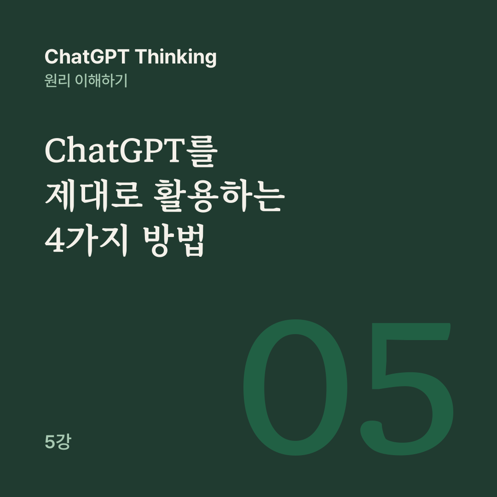

AI 원리 노트 · ChatGPT Thinking 5강
잘 생각하는 AI를 사용하는 것보다 중요한 것은, 언제 생각하고 언제 정보를 찾고 언제 검증해야 하는지 아는 것이다.
지금까지 우리는 ChatGPT가 어떻게 답변을 생성하고, 논리적으로 추론하며, 왜 때로는 틀리는지 배웠습니다. 그렇다면 어떤 상황에서 어떤 기능을 써야 가장 정확하고 유용한 답을 얻을 수 있을까요?
5강은 무조건 더 오래 생각하게 하는 대신, 문제의 종류에 맞게 Thinking, 웹 검색, 검증을 조합하는 판단력을 다룹니다.
ChatGPT를 쓰는 방법은 네 가지로 나눠 볼 수 있습니다. 일반 답변(Instant)은 빠른 질문, 설명, 번역, 요약, 글쓰기에 적합하고, Thinking은 복잡한 조건, 논리적 추론, 여러 선택지의 비교에 적합합니다.
웹 검색(Search)은 최신 정보, 실제 사건, 가격, 법규, 공식 발표처럼 외부 정보가 필요할 때 씁니다. 자료 검증(Verification)은 AI가 제시한 주장이 실제 출처와 일치하는지 확인하는 일입니다.
Thinking을 쓰면서 웹 검색도 할 수 있고, 검색으로 얻은 자료를 다시 검증할 수도 있습니다. 특히 검증은 별도의 모델이라기보다 답변의 신뢰성을 확인하는 과정입니다.
어떤 기능을 쓸지 복잡하게 외울 필요는 없습니다. 질문을 받았을 때 세 가지를 판단하면 됩니다. 최신 정보가 필요하면 웹 검색을, 여러 단계를 따져야 하면 Thinking을 고려합니다. 틀렸을 때 피해가 크다면 검증 수준을 높입니다.
‘이 문장을 자연스럽게 고쳐줘’ 같은 요청에는 일반 답변이 어울립니다. ‘조건 5개를 만족하는 여행 일정을 만들어줘’에는 Thinking을, ‘오늘 발표된 정책을 알려줘’에는 웹 검색을 권합니다. 요청 하나에 여러 판단이 겹치기도 합니다.
최신 세법을 적용해서 내 세금을 비교해 줘.
이런 요청에는 웹 검색과 Thinking에 공식 자료 검증까지 함께 쓰기를 권합니다. ‘이 계약서에서 위험한 조항을 찾아줘’라면 원문 자료와 Thinking에 전문가 확인까지 더하는 편이 좋습니다.
회사에 세 가지 프로젝트가 있습니다. 프로젝트 A는 이익 100만 원에 작업 4일, 프로젝트 B는 이익 80만 원에 작업 3일, 프로젝트 C는 이익 60만 원에 작업 2일입니다. 작업 시간은 총 5일입니다.
프로젝트를 중간에 나눌 수 없다면, 어떤 선택이 이익을 가장 크게 만들까요?
이 문제에는 최신 뉴스나 검색 결과가 필요하지 않습니다. 필요한 사실은 이미 질문에 주어져 있고, 핵심은 조건을 정확히 계산하고 가능한 선택을 비교하는 것입니다.
A만 진행하면 100만 원이고, A와 C는 6일이 필요해 함께 할 수 없습니다. B와 C를 함께 하면 5일에 140만 원으로 이익이 가장 큽니다.
이런 유형에서는 Thinking이 특히 도움이 됩니다. 다만 정확한 계산이 매우 중요하고 문제가 복잡하다면, 계산 도구나 코드를 함께 쓰는 편이 더 믿을 만할 수 있습니다.
이번에는 질문을 바꿔 보겠습니다. 시점은 2026년 11월 현재입니다.
서울에서 신청할 수 있는 청년 주거지원 정책을 비교하고 내 상황에 가장 유리한 것을 알려줘.
이 문제에서는 생각을 오래 하는 것만으로는 부족합니다. 신청 자격, 소득 요건, 모집 기간 같은 실제 정보가 필요하기 때문입니다.
먼저 웹 검색으로 서울시와 관련 기관의 현재 공고를 확인하고, Thinking으로 연령, 거주지, 소득 같은 조건을 비교합니다. 마지막으로 공식 공고문에 신청 자격과 마감일이 맞게 나와 있는지 검증합니다.
AI가 검색 결과를 썼다고 해서 모든 내용이 저절로 사실이 되지는 않습니다. 검색 결과 자체가 오래되었거나 잘못되었을 수 있습니다.
5강에서 가장 중요한 실험은 출처를 언급한 AI 답변을 원문과 비교하는 것입니다.
가상의 공식 공고문에 지원 대상은 만 19~34세, 신청 기간은 2026년 6월 1일부터 6월 30일까지, 소득 기준은 중위소득 120% 이하라고 적혀 있습니다. 여기에 AI가 이렇게 답했다고 해 봅시다.
만 19~39세가 신청할 수 있으며, 신청은 7월 31일까지 가능합니다. 공식 공고문을 참고했습니다.
공식 공고문을 언급했으니 믿어도 될까요? 원문과 대조하면 숫자가 다릅니다. AI는 지원 연령을 34세에서 39세로, 신청 마감일을 6월 30일에서 7월 31일로 잘못 전달했습니다. 출처가 있다는 사실보다, 그 출처가 해당 주장을 실제로 뒷받침하는지가 더 중요합니다.
OpenAI도 중요한 정보라면 인용된 링크를 직접 열어 원문과 게시 날짜를 확인하라고 안내합니다.
출처를 볼 때는 그 출처가 실제로 있는지, 작성 주체가 믿을 만한지 봅니다. AI가 주장한 내용이 정말 거기에 있는지, 자료의 발표 날짜가 질문과 맞는지, 다른 독립적인 근거와도 일치하는지도 확인합니다.
의료, 법률, 금융, 안전과 관련된 결정이라면 단순한 검색 결과뿐 아니라 공식 기관의 최신 자료와 필요한 전문가의 판단도 중요합니다.
좋은 질문은 무조건 길 필요가 없습니다. 다만 내가 원하는 결과, 주어진 조건, 필요한 근거, 검증 기준이 드러나면 답변의 품질을 높이는 데 도움이 됩니다.
복잡한 판단을 맡길 때는 목표와 조건, 가능한 대안을 적은 뒤 ‘조건을 빠뜨리지 말고 대안을 비교해 줘’라고 하고, 이렇게 덧붙일 수 있습니다.
권장안을 선택한 근거와 예상되는 단점, 확인이 필요한 가정도 알려줘.
ChatGPT의 모델 선택 메뉴에서는 빠른 응답과 더 깊은 추론 방식을 고를 수 있습니다. 웹 검색은 도구 메뉴에서 직접 고르기도 하고, 필요에 따라 자동으로 쓰이기도 합니다. 실제로 보이는 메뉴와 옵션은 계정과 설정에 따라 다를 수 있습니다.
어려우면 추론하고, 사실이 부족하면 찾고, 중요하면 검증해야 합니다.
이제 우리는 ChatGPT를 문제의 성격에 따라 적합한 능력을 조합해서 쓰는 도구로 바라볼 수 있습니다.
여기까지가 AI의 기본 원리와 활용법입니다. 6강의 주제는 원하는 답을 얻는 프롬프트 설계입니다.
공개 대화의 5강을 블로그용으로 다시 편집했습니다.
